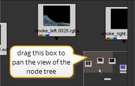

The Node Graph panel can seem very small, especially when your node tree grows. True, you already know how to resize and tear-off the windows, but sooner or later you may run out of display real estate. It’s time to learn some navigation controls that can help you work in the Node Graph (and other windows) in Nuke. Try the following navigation controls:
• Windows/Linux: While pressing the Alt key and the left mouse button, drag the mouse pointer across the Node Graph.
• Mac OS X: While pressing the Option (alt) key and the left mouse button, drag the mouse pointer across the Node Graph.
As you drag the mouse, you pan your view of the Node Graph.
• Windows/Linux: While pressing Alt and the middle mouse button, drag the mouse pointer across the Node Graph.
• Mac OS X: While pressing Option (alt) and the middle mouse button, drag the mouse pointer across the Node Graph.
Drag to the right and you’ll zoom-in. Drag to the left and you’ll zoom-out.
• Keyboard zoom-in/out. Tap the plus (+) key to zoom-in. Tap the minus key (-) to zoom-out.
• When the node tree extends beyond the borders of the window, a navigation box appears in the lower-right corner of the Node Graph. Drag the shaded rectangle inside the box and you’ll quickly pan to another view of the node tree.

• Press the letter F on your keyboard to fit the entire contents of the node tree within the borders of the Node Graph.
The navigation controls for the Node Graph also work inside the next window on our agenda, the Viewer.
|
|